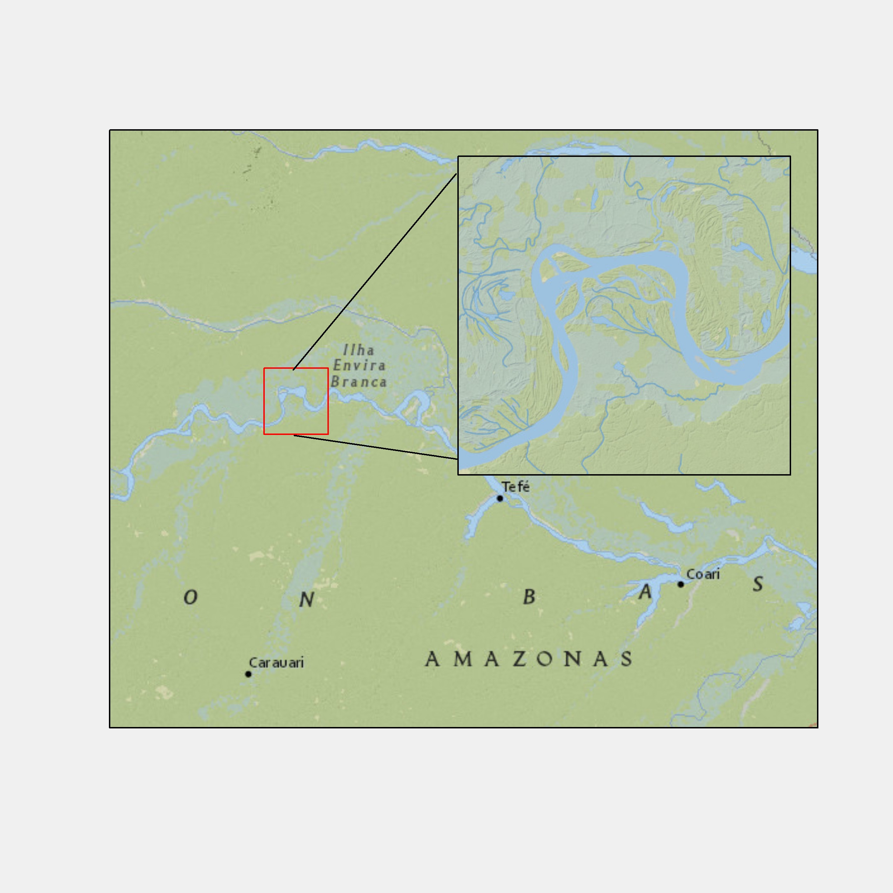

Learn how to create maps using the ggplot2 package.
Basic understanding of ggplot2 is necessary. Here are some resources:
Click on the three horizontally stacked lines at the bottom left corner of the slide, then you will see table of contents, and you can jump to the section you want
Hit letter “o” on your keyboard and you will have a panel view of all the slides
sf using the ggplot2 packageCreating maps differs from creating non-spatial figures in some ways. However, the underlying principle and syntax under ggplot2 to create maps and non-spatial figures are very similar.
Indeed, you will find map making very intuitive and rather easy if you already have some knowledge of how ggplot2 works even if you have not created maps using ggplot2. The only major difference between them is the choice of geom_*() types.
To create a map from sfs, we use geom_sf().
Check how each of them looks like using plot():
Instruction
We can use geom_sf() to create maps from sf objects
geom_sf() automatically detects the geometry type of spatial objects stored in an sf object and draw maps accordingly
Syntax
Try to create a map using one of wells_ne_sf, ne_counties, and railroads_ne.
ggplot2.ggplot2 figures.We use corn_acres_ne for demonstration. This is a county-level corn harvested acres data observed annually from 2020 through 2023.
Notice that a single county has multiple rows (one row for one year) with the identical geometry
Here are some of the aesthetic variables for points:
color: color of the pointsfill: available for some shapes (but likely useless)shape: shape of the pointssize: size of the points (rarely useful)color: dependent on gw_extracted (the amount of groundwater extraction)size: constant across the points (bigger than the default)color: constant across the points (blue)size: dependent on gw_extractedshape: constant at 2 across the points (square)color: constant across the points (blue)fill: constant across the points (red)size: constant at 1.5 across the pointsshape: constant at 22 across the points (square)Here are some of the aesthetic variables for polygons:
color: color of the borders of the polygonslinewidth: width of the borders of the polygonsfill: color of the inside of the polygonsshape: not availablesize: not availablecolor: constant at “red” across the polygonsfill: constant at “darkgreen” across the polygonslinewidth: constant at 0.4 across the polygonscolor: depends on namefill: constant at “darkgreen” across the polygonscolor: constant at “red” across the polygonsfill: depends on “countyfp”Here are some of the aesthetic variables for lines:
color: color of the lineslinewidth: width of the linescolor: constant at “blue” across the lineslinewidth: constant at 0.5 across the linesIt is often the case that you want to create a map using more than one spatial objects.
For example, you want to have county boundary (ne_counties), railroads (railroads_ne), and wells (wells_ne_sf) all in one map.
You can create layers with geom_sf() by setting different sf objects as the datasets individually, and then simply add them so they appear in a single map.
Remember that when you specify data in ggplot(), all subsequent geom_*() functions will use this data unless otherwise specified.
Instruction
+ add the end of line 2, run, and see what happensne_couties in line 1.geom_sf()s that are added later are superimposed on top of the existing layers
Wells are hidden beneath the county layer:
Instruction
Hide the railroads beneath the county layer.
ggplot() uses the CRS of the sf to draw a map by default.
Currently, ne_counties is unprojected:
Let’s project it to WGS 84, UTM zone 14.
Now, the map is drawn based on the new CRS of 32614
Notice that the major grid lines are no longer straight in figure at the bottom unlike the one at the top
X-Y labels are still in longitude and latitude (we will see how we change this)
You can use coord_sf() to alter the CRS on the map on the go, but not the CRS of the sf object itself.
In order to have X and Y values in the same units as that of the CRS in use on the map, you need to add datum = in coord_sf().
When there are multiple geom_sf() layers, the CRS of the first layers is automatically applied for all the layers , reconciling the difference in CRS automatically.
coord_sf() applies to all the layers.coord_sf(32614) at the endtheme_void() is a veery suitable pre-made theme for map that can get rid of many unnecessary components from default maps.
The ggspatial package lets you put a north arrow and scale bar on a map using annotation_scale() and annotation_north_arrow()
location: determines where the scale bar is
t (top) or b (bottom)l (left) or r (right).width_hint: determines the length of the scale bar relative to the plotTry yourself
Play with location and width_hint and see what happens.
Use pad_x and pad_y options to fine-tune the location of the scale bar.
A positive number means that the scale bar will be placed further away from closest border of the plot.
pad_x: since the second letter of location is l, the scale bar move an inch from the left border of the map
pad_y: since the first letter of location is b, the scale bar move 0.3 inches from the bottom border of the map
Try yourself
Play with pad_x and pad_y and see what happens.
annotation_north_arrow() to add north arrowannotation_scale()style option to pick a different type of north arrow symbolInset map (like one below) provides a better sense of the geographic extent and the location of the area of interest relative to the larger geographic extent that the readers are more familiar with.

Create a map like this using ne_counties with the ggmapinset package.
Note
Visit the ggmapinset website for more examples and other functionalities beyond what is presented here, including multiple insets.
The first step of making an inset map is to create the base map layer, a part of which is going to be expanded as an inset.
We want to create a map of all the counties in Nebraska with only the three counties (Perkins, Chase, and Dundy) colored red.
Let’s first create an sf consisting of the three counties first:
We now create the base map. You use geom_sf() to create base map layers.
We now configure (specify) the inset using configure_inset(). Here is the list of parameters you want to provide:
centre: the geographic coordinates of the small circle from which you expandtranslation: how much you shift in x and y from the center to display the enlarged circleradius: radius of the small circle at the originscale: how much to enlargeunits: length unitgeom_sf_inset() and/or geom_sf_text_inset() to create layers to present as an inset.geom_inset_frame() to add the inset frame (small circle, big circle, and the lines connecting them)coord_sf_inset(inset = inset_config) to reflect the configuration you set up earlier.Try yourself
By default, geom_sf_inset() creates two copies of the map layer: one for the base map and the other for the inset map.
map_base option in geom_sf_inset() determines whether you create the copy for the base map or not.
In the code below, map_base is not specified, meaning that geom_sf_inset(data = three_counties, fill = "black") will be applied for both the base and inset maps.
Try yourself
Comment out line 2 and comment in line 3 to see what happens.
We will use the gpplot2 and tidyterra package to create maps using raster data.
The tidyterra package provides geom_spatraster() that works specifically for SpatRaster object from the terra package.
There are other options like the tmap package. But, we do not talk about it in this course.
It works very much like map creation with sf. We just use SpatRaster object and use geom_spatraster() in place of geom_sf.
Note
Notice that geom_spatraster() automatically based the fill color of the cells on the attribute values without you specifying so.
How does geom_spatraster() behave with a multi-layer SpatRaster?
As the warning message suggests, both layers are plotted by default. You can specify which layer to use with aes(fill = layer_name) like below.
Note
When you want to create maps for individual attributes at the same time, you can add facet_wrap(~lyr).
sf and SpatRasterIt is very easy to achieve this. You just use geom_sf() for sf and geom_spatraster() for SpatRaster. You just add them as layers just like any figures you create with ggplot2.